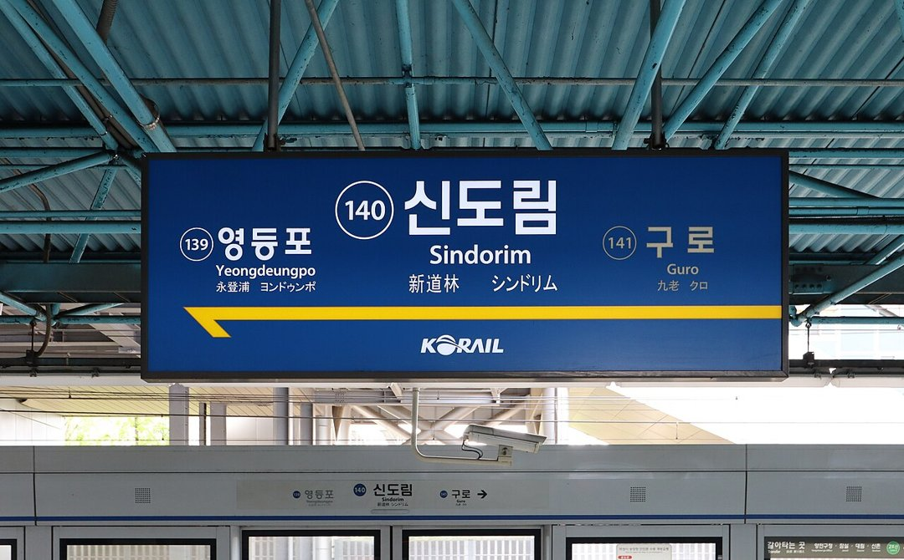
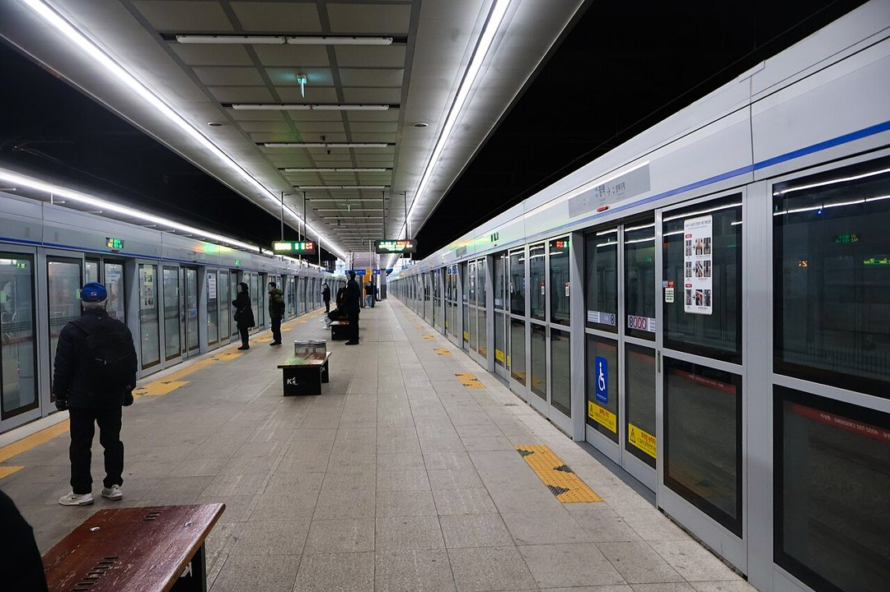

📷 사진 1 자리

▲ 코레일이 운영하는 1호선 신도림역(2023년 자료사진) · 사진: Mobius6 / CC BY-SA 4.0 / 위키미디어 공용
서울 지하철 1~8호선은 11월 25일 첫차부터 정상 운행해요. 새벽에 노사가 합의하면서 총파업이 철회됐어요. 다만 1·3·4호선 가운데 코레일 구간은 철도노조 준법투쟁이 따로 이어지고 있어서 지연될 수 있어요.
같은 호선이라도 운영하는 곳이 둘이라 생기는 일이에요. 내 노선이 어느 쪽인지와 늦었을 때 할 일을 적어 뒀어요.
3줄 요약
새벽에 무엇이 합의됐나
서울교통공사와 1노조는 24일 오전부터 협상해 25일 새벽 2시 반 무렵 합의했어요. 2노조와 3노조도 4시 15분 무렵까지 차례로 합의했어요. 서울시가 준비했던 버스 증편 같은 비상수송대책은 쓰지 않게 됐어요.
| 쟁점 | 합의 내용 |
|---|---|
| 임금 | 총인건비 3.5% 이내 인상 |
| 인력 감축 | 2,212명 감축이 담긴 계획 시행 보류 |
| 신규 채용 | 500명 규모 확인(노조 요구 800명) |
| 근무 | 육아휴직 등 근무제도 개선 |
감축 계획은 없어진 게 아니라 보류됐어요. 조직진단 연구 결과가 나오면 노사가 다시 협의해요. 아시아경제는 이번 합의를 '잠정 합의'로 전했어요.
철회됐는데 1호선은 왜 늦을까
1호선은 두 기관이 나눠 운영해요. 서울교통공사 파업은 끝났지만 경부·경인·경원·장항선으로 이어지는 바깥 구간은 코레일 몫이에요. 3호선과 4호선에도 코레일 구간이 있어요. 수인분당선과 경의중앙선도 코레일 노선이에요.
| 타는 노선 | 오늘 상황 |
|---|---|
| 2·5·6·7·8호선 | 파업 철회, 정상 운행 |
| 9호선·GTX-A | 노사 합의 |
| 1·3·4호선 | 코레일 구간 지연 가능 |
| 수인분당·경의중앙선 | 준법투쟁으로 지연 가능 |
철도노조는 23일 오전 9시부터 규정대로만 일하는 안전운행 투쟁을 하고 있어요. 기관사는 늦은 시간을 따라잡으려고 속도를 올리지 않고 감속 운행해요. 시간 외·휴일 근무도 거부해요. 노조가 밝힌 계획은 2주예요.
📷 사진 2 자리

▲ 수도권 1호선 평택역 승강장(2025년 자료사진) · 사진: LandAndTree / CC BY-SA 4.0 / 위키미디어 공용
2024년에는 얼마나 늦었나
2024년 11월에도 철도노조 준법투쟁이 있었어요. 사흘째였던 20일의 코레일 집계를 시간대로 나눠 보면 차이가 커요.
| 시간대 | 20분 이상 지연 |
|---|---|
| 첫차~9시 | 470대 중 23대 |
| 첫차~18:30 | 1,750여 대 중 300여 대 |
출근 시간에는 4.9%로 스무 대에 한 대꼴이었어요. 저녁까지 합치면 약 17%로 여섯 대에 한 대꼴이에요. 그날은 코레일과 함께 쓰는 3호선에서도 지연이 생겼어요. KTX와 일반열차는 정상 운행했어요. 올해 같은 규모라는 뜻은 아니에요. 25일 집계는 아직 확인되지 않았어요.
늦었을 때 할 일
1. 타기 전 코레일 지하철톡이나 코레일+에서 운행 상황을 봐요. 1~8호선은 또타지하철이에요.
2. 논술·면접처럼 시간을 못 바꾸는 일정은 버스 경로를 하나 더 찾아 둬요. 코레일도 다른 교통수단을 고려해 달라고 했어요.
3. 지각했다면 지연증명서를 받아요. 1~8호선 열차는 서울교통공사 누리집의 '간편지연증명서'나 역무실에서 받아요. 코레일 열차는 앱과 누리집, 코레일 역에서 받아요.
4. KTX나 무궁화호를 예매했다면 쟁의 기간에는 환불·변경 위약금이 없어요.
자주 묻는 질문
Q. 오늘 퇴근길 지하철도 정상인가요?
1~8호선 파업은 철회돼 정상 운행이에요. 코레일 구간을 지나는 분은 앱으로 한 번 확인하세요.
Q. 2호선 역에서 1호선 코레일 열차 지연증명서도 받을 수 있나요?
서울시 안내를 보면 1~8호선 역무실은 1~8호선 열차의 증명서만 내줘요. 코레일 열차는 코레일에서 받으세요.
Q. 12월에 또 파업하나요?
철도노조는 12월 10일 오전 9시부터 무기한 총파업을 예고했어요. 코레일과 SR이 합친 뒤 첫 파업이 될 수 있어 SRT가 빈자리를 메우던 예전과 달라요. 교섭에 따라 바뀔 수 있어요.
이번 주는 출근보다 퇴근을 더 여유 있게 잡는 편이 나아요. 2024년 집계에서 저녁까지 지연이 쌓인 건 늦은 열차가 다음 열차까지 밀어내기 때문으로 보여요. 회복운전을 하지 않으면 아침에 생긴 차이를 줄일 방법이 적어요.
다음으로 볼 날짜는 12월 10일이에요. 그 주에 기차표가 있다면 철도 노사 교섭 소식을 함께 확인하세요.
함께 보면 좋은 이슈
끝까지 읽어 주셔서 감사해요. 공감(좋아요) ♥ 꾹, 이웃 추가도 부탁드려요!